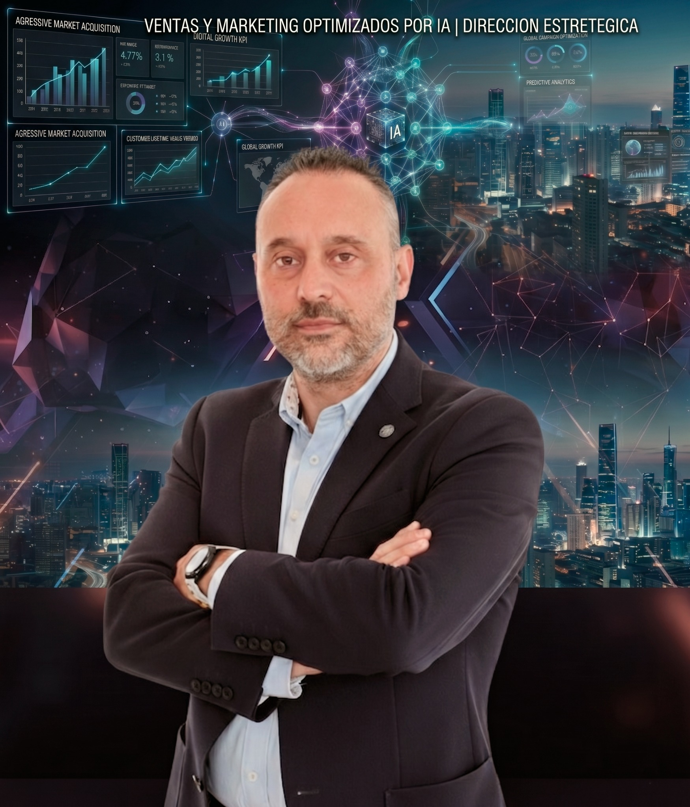

Dirección estratégica comercial
20+años de experiencia
600K€+gestión presupuestaria
B2B/B2Cventas y negocio
Ventas y marketing optimizados por inteligencia artificial.
Ejecutivo senior con más de 20 años de experiencia en Dirección Comercial, Desarrollo de Negocio y Marketing Digital en sectores competitivos. Especialista en ventas B2C y B2B, transformación digital, CRM, generación de leads, estrategia omnicanal y gestión de equipos de alto rendimiento.

Digital Growth KPI
Competencias clave
Visión comercial, datos y ejecución.
Dirección de Ventas VN y VODirección de MarketingDesarrollo de NegocioEstrategia ComercialP&L y PresupuestosKAMGrandes CuentasFlotas B2BLiderazgo y CoachingCRMMarketing DigitalTransformación DigitalEstrategia OmnicanalGeneración de LeadsSEO / SEMGoogle AnalyticsMeta Business SuiteForecasting & ReportingApertura de CentrosIA aplicada a negocio
Currículum
Trayectoria profesional
Resumen estructurado de experiencia, formación, herramientas e idiomas.
Grupo Gil Automoción · Director de Marketing y Ventas
Dirección de marketing y ventas multimarca en vehículo nuevo y vehículo de ocasión. Gestión presupuestaria, productos financieros y estrategia 360º omnicanal alineada con objetivos comerciales.
- Diseño y control de campañas online y offline: Google Ads, Meta Business Suite y SEMrush.
- Expansión y campañas de apertura de nuevos concesionarios en Madrid.
- Lanzamiento de identidad de marca propia: AutoestrenaGil.es / OcasionGil.es.
El Distrito Comunicación · Director de Publicidad
Captación B2B, gestión y desarrollo de cartera de clientes clave; negociación con grandes cuentas y agencias de medios.
- Diseño de campañas a medida y elaboración de propuestas comerciales.
- Organización de eventos y ferias.
Grupo CMS · Director Comercial VN y VO / Director de Desarrollo
Dirección comercial en grupo concesionario con marcas BMW, MINI, Opel y Chevrolet. Gestión de equipos, KPIs, stock VN, VO, flotas B2B y apertura de centros.
- Mejora de ventas del 20% en ventas y calidad.
- Apertura de BMW Getafe, Opel Moncloa y Opel General Pardiñas.
- Gestión de flotas B2B para cuentas estratégicas como Santa Lucía y DHL.
Dilab Sunglasses · Director de Desarrollo de Negocio
Dirección estratégica y soporte operativo a red comercial nacional. Apertura de canales de distribución y acuerdos con grandes cuentas.
Prevensis · Director de Desarrollo y Grandes Cuentas
Apertura de mercado y captación de grandes cuentas corporativas: BP, Endesa, Iberdrola, Repsol, HP y Tragsa. Definición de estrategia comercial B2B.
Formador Freelance · Formación TIC
Formación para empresas y particulares en informática, MS Office, AutoCAD, Internet y Diseño Web.
Fruar S.A. - Agencia Renault · Gestión de negocio familiar
Aprendizaje integral del negocio de automoción: taller, compraventa VN/VO, pedidos, proveedores y facturación.
Formación académica y especializada
- Formación en IA Aplicada a Negocio - Varias instituciones (2024 - 2026)
- The PowerMBA - Business & Strategy Program (2020 - 2021)
- Programa Avanzado de Transformación Digital - Grupo Aspasia (2020)
- Dirección de Marketing y Ventas - Instituto Europeo (2019)
- Ingeniería Técnica Industrial - Formación universitaria de base
- Técnico Especialista en Electrónica Industrial (FP II)
Herramientas y tecnología
- CRM: Salesforce, HubSpot, Imaweb y DMS
- Marketing Digital: Google Analytics, Google Ads, Meta Business Suite y SEMrush
- IA: ChatGPT, Claude, Gemini, Grok, Perplexity, NotebookLM y Kimi
- Ofimática: Microsoft Office avanzado
- Diseño y contenido: Photoshop, Premiere Pro, Illustrator y Canva
Idiomas y otros
- Español: nativo
- Inglés: B1 intermedio
- Francés: B1 intermedio
- Carné de conducir: AM, A1, A2, A, B, BE, C1, C1E y C
Publicaciones
Artículos publicados
Los artículos creados desde el área privada aparecerán automáticamente en esta sección en el navegador donde se publiquen.
Aún no hay artículos publicados
Accede al área privada para crear el primer artículo con texto enriquecido e imágenes.
Contacto